Gewassen R tot Z
Telen richting kwaliteit per gewas of product nader bekeken.
Rode biet
Bemesting rode biet
Op het meerjarige proefveld Mest als Kans te Lelystad worden verschillende meststoffen vergeleken. Na drie jaar bemesten zijn de eigenschappen van rode biet vergeleken bij de bemestingen kunstmest, drijfmest, potstalmest en groencompost.
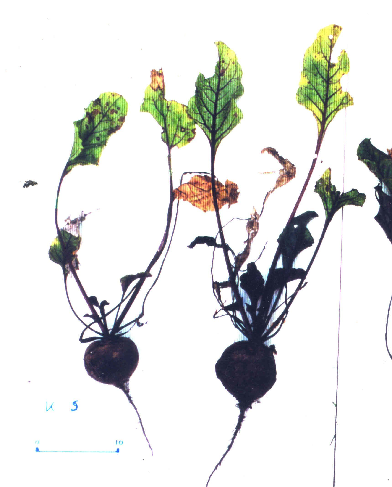
Kunstmest
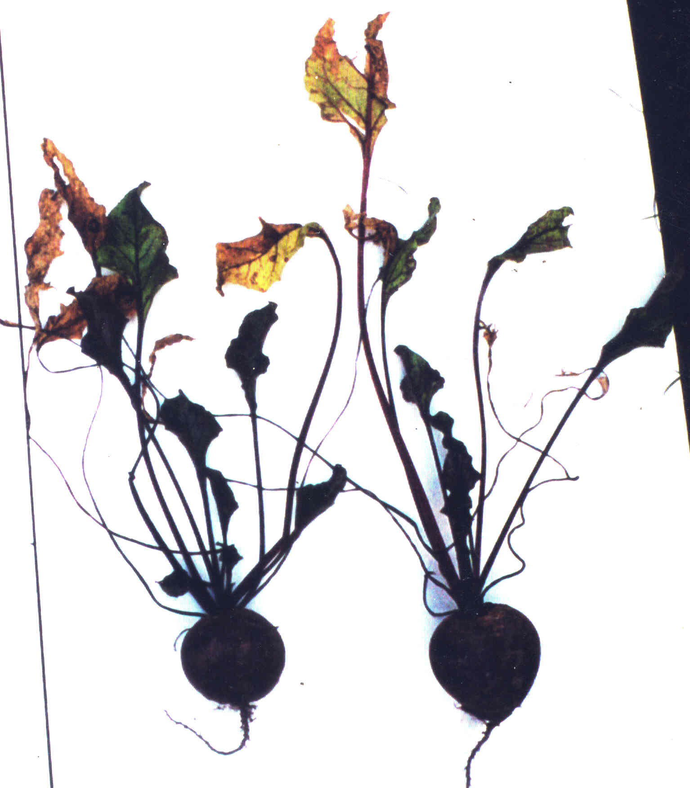
Drijfmest
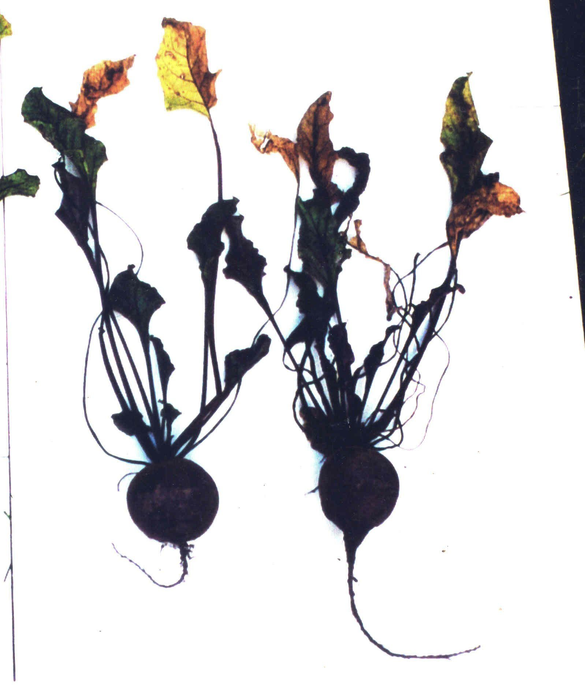
Stalmest

Groencompost
Producteigenschappen

Wat betreft producteigenschappen scoren stalmest en groencompost het hoogst.
(Onderzoek Louis Bolk Istituut, Driebergen)
Rassenkeuze rode biet

De veredeling richt zich vaak niet op voedingskwaliteit en dus ook niet op smaak. Rassenvergelijkingen op smaak geven teleurstellende resultaten. Echt goede bieten zijn zeldzaam/ opbrengst en gebruikswaarde staan centraal in de veredeling (zie ook winterwortel).
Hierboven het resultaat van de smaakbeoordeling van rode bietenrassen, geteeld op het bedrijf van Aukes in Noord-Friesland, uitgevoerd door PPO in 2007 (Verkerke, 2007)
Sla

De groei van kropsla
In het begin is er helemaal geen lengtegroei. De bladeren groeien eerst in een rozetvorm. Dan ontstaat een krop, van waterige bladeren, die wel smaak heeft en weinig nitraat en veel suiker bevat. Dan komt de generatieve fase. Lengtegroei , zijstengels, groei in de periferie, oriëntatie aan het zonlicht, verstarring aan het licht.
Wilde sla en cultuursla

Wilde sla
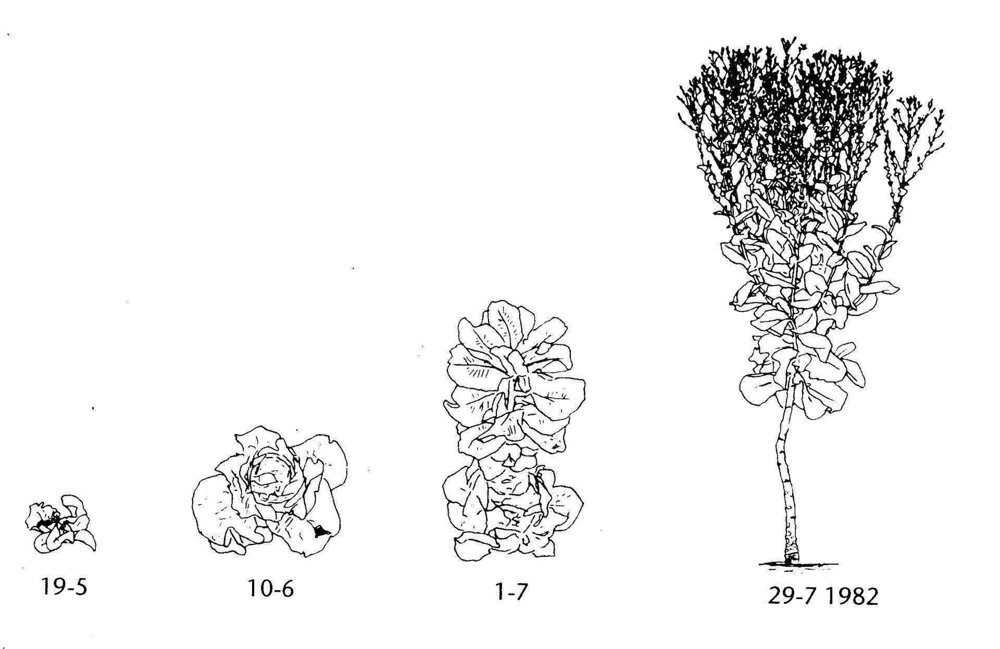
Cultuursla
Wilde sla
kiemt, daarna een groeifase en vervolgend naar bloei en zaadvorming. Eerst blad dan zaad.
Cultuursla
kiemt, vormt een krop en gaat dan pas bloeien en zaad vormen. De krop heeft kenmerken van zowel de jonge fase van wilde sla als van de rijpingsfase. Dat heeft het eetbare deel van veel voedingsgewassen. Door te zware bemesting of eenzijdige veredeling wordt het jonge deel, het volume, vaak te sterk benadrukt. Tekeningen Behrendt,1983

Links licht bemeste sla, rechts zwaar bemeste sla. Bij de zwaar bemeste sla gaar het blad rotten tijdens het schieten. Er is te zwaar bemest.
Suikerbiet

Ontwikkeling van het blad van de suikerbiet inclusief de fase van doorschieten
Aanvankelijk zijn de bladeren afgerond. Later worden ze spitser.
Suikerbiet is kwalitatief gezien een interessant gewas. Te weinig stikstof (minder dan 200 kg N per ha beschikbaar) betekent een lagere wortelopbrengst en te veel stikstof is nadelig voor het suikergehalte en de winbaarheidsindex (WIN). Vooral het suikergehalte is bij de uitbetaling erg belangrijk. Bij de huidige uitbetaling is een één procent hoger suikergehalte financieel gezien ongeveer evenveel waard als zeven ton per hectare extra aan bietopbrengst. Hierbij is uitgegaan van 80 ton bieten per hectare.
Is bij de meeste landbouwgewassen de totale opbrengst belangrijk, bij de suikerbiet is het afrijpingsproces mede van belang.
In de periode 1976-1978 is op de Drie Organische Stofbedrijven te Nagele onderzoek gedaan naar de gewasontwikkeling van suikerbiet (Schwencke, van der Vet en van Mansvelt, 1978). Op basis van het werk van Bockemühl (o.a. 1964) werd gekeken naar de verschillende ontwikkelingsfasen. Onderscheiden werden bij het blad de fasen van spruiten, verbreden, geleden en spitser worden. Er was een tendens tot een wat later overgaan tot spitser worden bij het kunstmestbedrijf. Het suikergehalte was hier evenwel wat hoger. (17,8 % kunstmest; 16,6 % gemengd bedrijf). Er blijven dus nog wat vragen over, maar een eerste stap naar een kwalitatieve beoordeling van de suikerbiet is gezet.
Evenwicht tussen groei en rijping
Onderstaand grafiek laat zien hoe met een stikstofbemesting het evenwicht tussen bladvorming en suiker in de biet zijn te beïnvloeden. Meer stikstof geeft meer blad, maar minder suiker.

Tarwe

Twee tarweplanten op het biologisch-dynamische bedrijf Loverendale (Projectgroep tarwe, 1982).
- Armere bodemb. Rijkere bodem
Bodem
a. Laag organische stofgehalte, lage activiteit bodemleven, lage beschikbaarheid voedingsstoffen.
b. Hoog organische stofgehalte, vrij hoge activiteit bodemleven, hoge beschikbaarheid voedingsstoffen.
Gewas
a. Jeugdgroei verticaal, bij strekking smalle stijl omhoog staande bladeren, naar oogst toe blijven stengels dicht opeen. 3 halmen per plant.
b. Jeugdgroei meer horizontaal, sterkere uitstoeling, bij strekking meer brede bladeren, punten hangen omlaag. Naar oogst toe staan stengels rond een binnenruimte.6 halmen per plant.
Brood luchtig. Brood
a. Geringe wateropname, slap en klef deeg dat moeilijker te kneden. Deeg rijst beperkt. Brood compact.
b. Hogere wateropname, makkelijker te kneden. Deeg rijst sterk.
De smaak van brood a is volgens de onderzoekers beter. Smaak brood b is beter volgens smaakpanel Instituut. Graan, Meel en Brood in Wageningen.
Algemeen
Wanneer het meel zodanig is dat het brood goed rijst wordt dat meestal als positief gezien. Meel rijst goed als de tarwe met veel stikstof (organisch of mineraal) bemest wordt. Gebonden stikstof wordt in explosieven gebruikt en blaast de boel op. Bij deeg lijkt hetzelfde wel het geval. Het deeg wordt opgeblazen, maar het gewas ook. Dit groeit te ijl en valt om. Ook de voedingskwaliteit gaat achteruit. Zelfs aan de eiwitsamenstelling is dat te zien. Pas dus op voor te goed rijzend deeg.Door sturen van de bodemvruchtbaarheid en bemesting is de kwaliteit van een product te beïnvloeden. De tarwe op de hiernaast afgebeelde wat armere grond laat meer rijping zien. Op de rijkere grond is de groei veel sterker. De smaak wordt sterk bepaald door de verwachtingen van de proever. Onderzoek laat zien dat brood bereid uit beter afgerijpte tarwe wat betreft aminozuursamenstelling een hogere voedingswaarde heeft. (Bodo, 1960, Schuphan, 1976).
Biologisch en gangbaar
Onderzoek op de OBS bedrijven in Nagele. Vergelijking van een biologisch-dynamisch en een gangbaar bedrijf.(NRLO, 1983b)
Een hoog eiwitgehalte wordt als positief gezien voor de bakeigenschappen, maar de voedingswaarde kan bij de gangbare tarwe vanuit de gewasontwikkeling als lager worden beschouwd. Meer eiwit door meer stikstofbemesting gaat in het algemeen samen met een lager gehalte aan essentiële aminozuren maar dat gehalte was bij deze beide tarwegewassen gelijk.Tekeningen Gerda Peters

Biologische tarwe blijft rechtop staan

Zwaarder bemeste gangbare tarwe legert Onderzoek op de OBS bedrijven in Nagele. Vergelijking van een biologisch-dynamisch en een gangbaar bedrijf.(NRLO, 1983b)
Een hoog eiwitgehalte wordt als positief gezien voor de bakeigenschappen, maar de voedingswaarde kan bij de gangbare tarwe vanuit de gewasontwikkeling als lager worden beschouwd. Meer eiwit door meer stikstofbemesting gaat in het algemeen samen met een lager gehalte aan essentiële aminozuren maar dat gehalte was bij deze beide tarwegewassen gelijk.Tekeningen Gerda Peters Gewasontwikkeling en bakprocesIn welke wereld leven wij? Wat gebeurt er om ons heen? Hoe vinden we een harmonie tussen buiten- en binnenwereld. Kijken we naar ons zelf dan herkennen we de buitenwereld en kijken we naar de buitenwereld dan herkennen we ons zelf. Bij de landbouw tenminste en alleen als we er zorg voor dragen dat dat ook zo is. De projectgroep tarwe 1982 deed hier onderzoek naar en vond overeenkomsten tussen tarwegroei en bakproces. Zij formuleerden dit als volgt:


Gewasontwikkeling
(boven)De zaden ontkiemen in de donkere bodem. Water en mineralen worden opgenomen. De planten breiden zich sterk uit in het horizontale vlak. Na langere tijd verandert de vorm van de plant; richt zich op en opent zich voor lucht en licht. De halmen wiegen met de lucht mee. In de warmste maanden van het jaar rijpt het kleurende graan door en door af.
Bakproces
(onder)Bij het malen verdwijnt de vorm van de korrels. Bij het doorroeren van het meel-water mengsel wordt het water opgenomen. Een vormloze brij vervloeit. Bij het kneden wordt de massa elastisch en rijst. In de hitte van de oven worden de broden door en door gaar; zij krijgen kleur en worden aromatisch. (projectgroep tarwe 1982).

Het gangbare gewas ontwikkelde zich sneller dan het biologisch-dynamische gewas. Op 22 juni was de bodembedekking resp. 97 en 42 %. De bd-planten zijn stugger en voelen minder slap aan. Schimmelziektes (meeldauw en bruine roest) treden bij bd niet en bij gangbaar duidelijk op. De luizenaantasting was bij gangbaar ook sterker.
Tomaat
De kwaliteit van een tomaatWanneer het over de kwaliteit van tomaat gaat, gaat het meestal over smaak en lycopeengehalte. Van lycopeen, een antioxidant, is overtuigend aangetoond dat meerdere ziekten, waaronder kanker, hierdoor afgeremd worden. Bij de smaak spelen suikergehalte, zuurgehalte en geurstoffen een belangrijke rol. Zowel bij smaak als lycopeengehalte spelen verschillen tussen rassen een rol, maar bemesting is vaak het belangrijkste.
Door het Louis Bolk Instituut zijn streefwaarden opgesteld voor een goede tomaat (Andeweg, 1986):

Streefwaarden tomaat
Voor lycopeen is geen streefwaarde beschikbaar. Lycopeen bepaalt de rode kleur van tomaat en het gehalte wordt hoger bij rijping. Normale gehalten zijn 3-6 mg per 100g.
Voor een goed tomaat moet de stikstofvoorziening niet te hoog zijn. De kalium- en magnesiumvoorziening niet te laag. De EC relatief hoog: 2,5-3 μS/cm.

Licht en zwaar bemeste tomaat
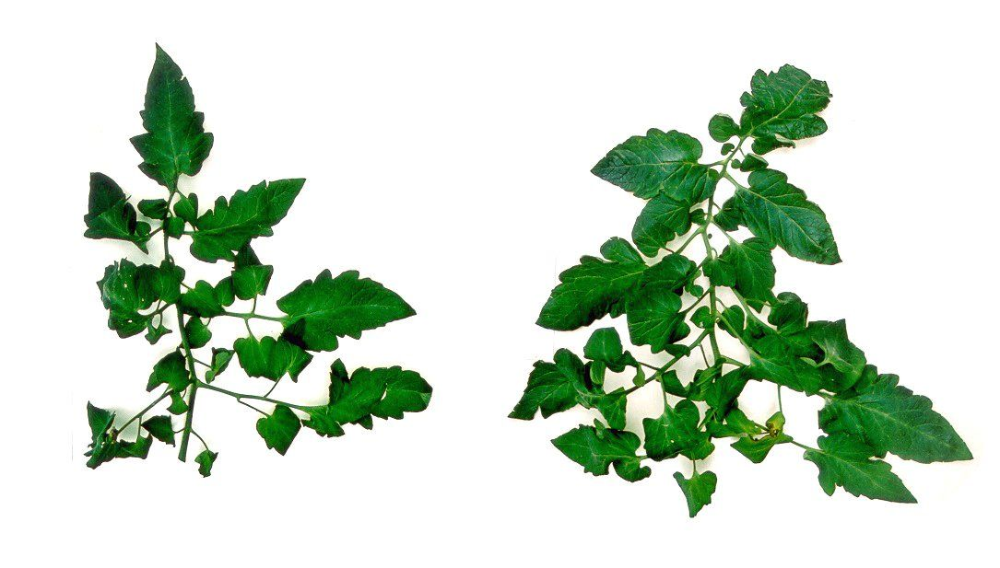
Winterpeen
De groei van een winterwortel

De groei van een winterwortel van juni tot oktober. Na de vijfde tekening neemt de vorming van nieuw loof sterk af en is er een sterke wortelgroei. Dit is na 1 augustus. Ook de smaak wordt dan steeds duidelijker (tekeningen Nel Bokhorst)
Een perceel met winterwortel ziet er meestal egaal groen uit. Toch kan de gewasontwikkeling sterk verschillen per perceel.
Bij een hoge beschikbaarheid aan stikstof gaat de groei door tot het eind van het seizoen en is er minder vorming van suiker en aroma en is de houdbaarheid minder goed. Het voorjaarsproces gaat door tot in de herfst. Bij een meer evenwichtige groei vermindert de loofgroei na ongeveer 1 augustus. Dit gaat vaak samen met geelverkleuring van de oudste bladeren. Soms dreigen er dan oogstproblemen omdat de voor de oogstmethode stevig loof nodig is. Begin september bijmesten met een stikstofrijke meststof is dan een oplossing. Dit gaat evenwel direct ten koste van de kwaliteit.
Verschillen in gewasontwikkeling

Tot 1 augustus nieuw blad, daarna (na tekening 4) nauwelijks meer nieuw blad. Het blad spreidt zich en gaat liggen, in deze tijd rijpt de wortel goed af.
Op 4 oktober zijn bijna alle bladeren van het hele seizoen nog aanwezig, bij het afrijpen is een deel geel geworden.

Gedurende het hele seizoen van juni tot oktober worden er nieuwe bladeren gevormd. De groei gaat als maar door. Ook sterven er bladeren af. De wortel komt niet goed tot afrijping
Bij een hoge beschikbaarheid aan stikstof gaat de groei door tot het eind van het seizoen en is er minder vorming van suiker en aroma en is de houdbaarheid minder goed. Het voorjaarsproces gaat door tot in de herfst. Bij een meer evenwichtige groei vermindert de loofgroei van ongeveer 1 augustus. Dit gaat vaak samen met geelverkleuring van de oudste bladeren. Soms dreigen er dan oogstproblemen omdat de voor de oogstmethode stevig loof nodig is. Begin september bijmesten met een stikstofrijke meststof is dan een oplossing. Dit gaat evenwel ten kosten van de kwaliteit.(Visser, 1979, tekeningen Gerda Peters) Wortel doorgesneden
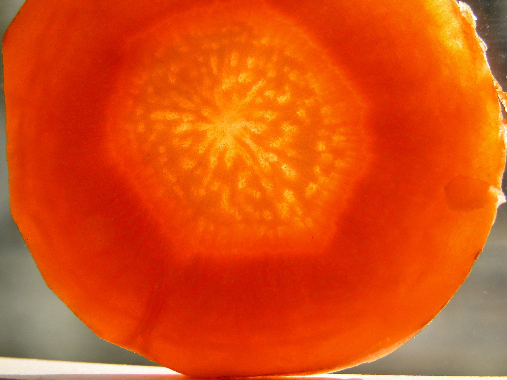
Peen dikke bast.
Deze heeft een hoog droge stofgehalte en een hoog suikergehalte. De smaak en houdbaarheid zijn goed. Het nitraatgehalte is laag.
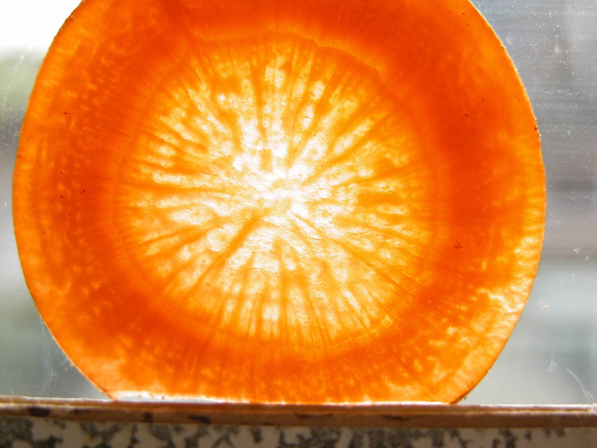
Peen dunne bast.
Deze peen is in vergelijking met de peen met dikke bast wateriger, minder aroma en minder goed houdbaar. Het nitraatgehalte is zeer hoog.
Eigenschappen dikke en dunne bast

Zelfontbindingstest
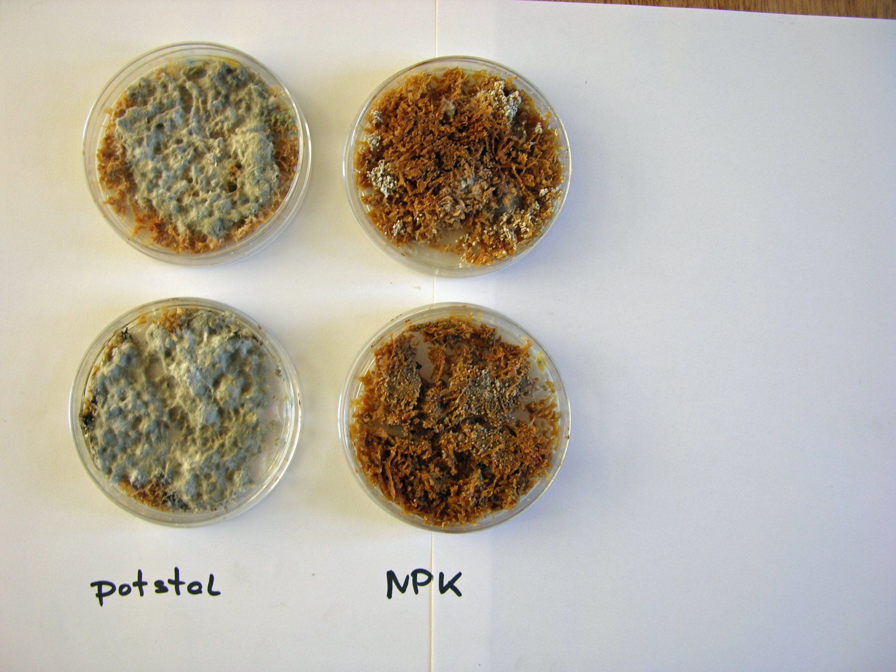
In deze situatie bij vergelijking van een beperkte stalmestgift en een ruime stikstofgift met kunstmest is er bij stalmest als mest alleen schimmelaantasting aan de buitenzijde en daardoor weinig droge stofverlies.
Bij kunstmest is er rotting door bacteriën in het gehele product. Vloeistof onderin het bakje. Veel droge stofverlies.
Onderzoek Gaia Bodemonderzoek.
Nitraat in biologische peen

Uit diverse onderzoeken blijkt dat het nitraatgehalte van biologische peen in de periode 1996 tot 2004 duidelijk toeneemt en in 2004 bij 15 aselect gekozen monsters duidelijk hoger is dan gangbaar. Dit duidt op achteruitgang van de kwaliteit.
Mogelijke oorzaken:
meer gebruik van kwalitatief matige en nitraatrijke rassen zoals Nerac.vaker extra stikstofbemesting eind augustus, begin september om veel loof te hebben bij de oogst.toename stikstofleverend vermogen van de bodems.
Verdeling van nitraat in peen

Bij de worteldoorsneden (zie boven) bleek al dat een dunne bast samen kan gaan met veel nitraat in de peen. Dit wordt duidelijk met bovenstaande figuur. De kern van een peen bevat meer nitraat.
De smaak van verschillende peenrassen
Bij de kwaliteit van landbouwproducten spelen twee dingen. Het ras van het gewas en de keuze van de groeiomstandigheden.De veredelaar moet inzicht in voedingskwaliteit hebben en selecteren of verdelen in de goede richting.Bij de teler ligt het zwaartepunt anders. Deze moet zich op de plant richten en zich afvragen wat bij de plant past en voor een planteigen ontwikkeling zorgen.
Niet altijd loopt dit goed. De veredelaar let vooral op opbrengst en gebruikswaarde. Smaak verkoopt niet en daar wordt nauwelijks op gelet. In 2006 werd op een twee biologische bedrijven in Noord-Friesland, Aukes en Timmers de smaak van peenrassen vergeleken door PPO (Verkerke 2007). De meeste rassen en ook de veelgeteelde Nerac komen er slecht van af.

Verkerke 2007

Nuijten
Analysemethoden
Door het Louis Bolk Instituut zijn analysemethoden ontwikkeld om groei, afrijping en doordringing van beide via eenvoudige methoden aan het product te beoordelen. Een uitvoerige analyse van de gewasontwikkeling is meestal te tijdrovend.
Groei kan beoordeeld worden middels nitraat.
Afrijping met drogestofgehalte en suikergehalte.
Doordringing (integratie) via smaak en zelfontbindingstest.
Northolt e.a., 2004 noemen ook de stompheid van de onderkant van de wortel.
Streefwaarden (Bokhorst, 1985)Nitraat (mg.kg) < 310 Droge stof (%) > 10,4Suiker (Brix) > 5,5
Ds verlies zelfontbinding (%) < 73
Smaak +/- – +
Witte kool
Inleiding
In de 80-er jaren van de vorige eeuw is heel veel onderzoek gedaan naar productkwaliteit. Zowel in Nederland als daarbuiten, vooral in Duitsland en Zwitserland. Veel onderzoek had betrekking op een vergelijking van gangbaar en biologisch. Biologisch was toen vrijwel uitsluitend biologisch-dynamisch. Het idee was dat biologisch het vooral moest hebben van productkwaliteit.Ten onrechte verdween deze gedachte enigszins binnen de biologische sector. Er lijkt nu een zekere kentering en van het oude onderzoek kunnen we veel leren.
Een deel van het onderzoek vond plaats op de proef Ontwikkeling Bedrijfssystemen (OBS) te Nagele. Zo ook dit onderzoek naar witte kool. Drie bedrijven, biologisch-dynamisch (gemengd), geïntegreerd (akkerbouw) en gangbaar (akkerbouw) werden hier vergeleken. Het onderzoek op de OBS heeft de biologische landbouw, als serieus alternatief voor gangbaar, op de kaart gezet.
Algemeen
Wat minder zwaar bemeste biologische kool heeft een meer planteigen groei dan zwaar bemeste gangbare kool. Toch is de zuurkoolkwaliteit niet zo heel veel beter. Dat komt door plagen die biologisch niet bestreden werden. Bij de gangbare kool traden vooral schimmelziekten op. Schimmelziekten duiden op een zwakker gewas. Plagen juist niet.
Gangbare en biologisch-dynamische kool

De gangbare planten hebben meer schimmelziekten, de biologisch-dynamische meer vraat door duiven, aardvlooien en koolrupsen
Dit duidt op een grotere innerlijke weerstand van de biologisch-dynamische planten.

De gangbaar geteelde kool heeft een snellere beginontwikkeling, maar sterft aan het eind sneller af. Dit is ook te zien aan de hoeveelheid blad per plant.
Bladgewicht (g) per plant
______ gangbaar– – – – biologisch-dynamisch
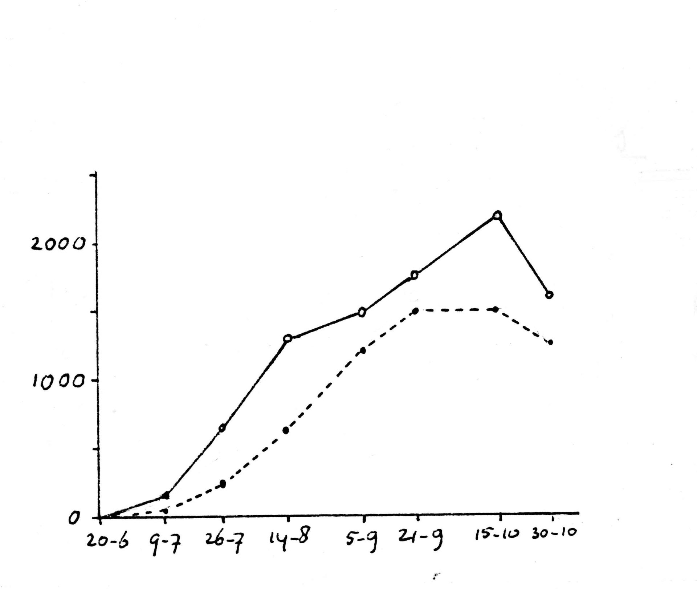
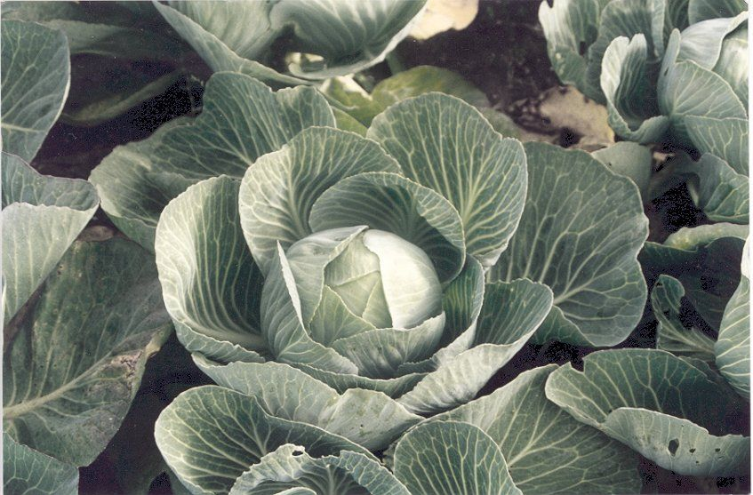
Biologisch-dynamische kool
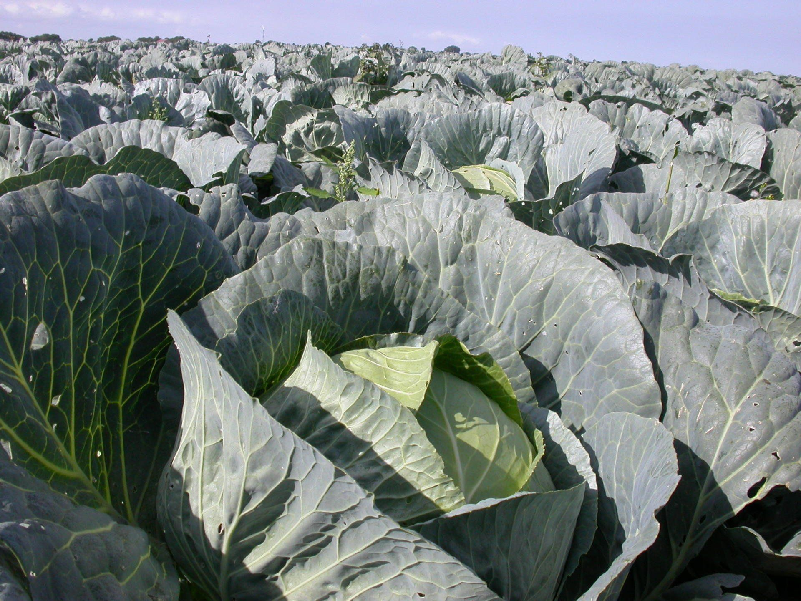
Gangbare kool
Zuurkool
In 1984, 1985, en 1986 is bij een proef in Nagele zuurkool gemaakt van gangbare en biologisch-dynamische kool. De gemiddelde resultaten van drie jaar onderzoek.
De biologisch-dynamische kool scoort gemiddeld wat beter wat betreft droge stofgehalte en smaak. Dat de verschillen niet groter zijn komt waarschijnlijk door een hogere druk van plagen bij biologisch-dynamisch.

Gangbare en biologisch-dynamische zuurkool. Gemiddelde resultaten van drie jaar onderzoek
Onderzoek Louis Bolk Instituut, tekeningen Gerda Peters